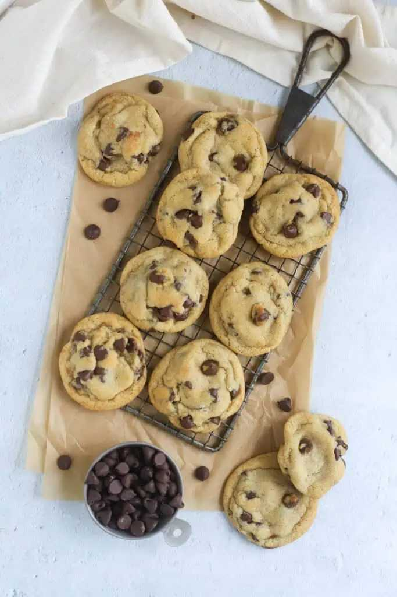

Do you know how much a cup of flour weighs?
If you said "120 grams," you're half right. That's the weight of a cup of flour measured by spooning and leveling. But if you scoop the cup directly into the flour bag, you'll get 150 grams or more. That's a 25% difference. Enough to turn a tender cake into a dry brick.
Do you know how much a cup of brown sugar weighs? It depends. Packed? 220 grams. Loosely spooned? 170 grams. Another 25% difference.
Do you know how much a cup of butter weighs? That one's easy: 227 grams (8 ounces). But only if it's solid. Melted butter weighs the same—it just takes up less volume.
Here's the problem: recipes lie. Or rather, they assume you measure ingredients the same way the author did. But "1 cup flour" could mean any of four different weights, depending on technique.
The solution is simple: stop using cups. Start using grams and ounces. And build yourself a density reference chart so you never have to guess again.
I built mine 10 years ago. It's laminated and taped inside my kitchen cabinet. I use it every single day.
Let me show you how to build yours.
Why density matters (the 30‑second explanation) Density is how much something weighs per unit of volume. A cup of feathers weighs almost nothing. A cup of lead weighs a ton. Flour, sugar, and butter fall somewhere in between.
The problem is that ingredients can be packed, sifted, spooned, or dipped. Each method changes the density.
Take flour as an example. Sifted flour weighs about 100g per cup – very light, aerated. Spooned and leveled gives you 120g per cup, the standard baking method. Dipped and swept gives you 150g per cup, heavy and compacted. Packed (pressed down) can reach 180g per cup, extremely dense.
That's an 80% range from lightest to heaviest. Imagine if a recipe called for "1 cup flour" and you used packed flour instead of sifted. Your cake would have 80% more flour than intended. It would be inedible.
That's why weight is superior. 120g of flour is 120g of flour, no matter how you scoop it.
But here's the catch: many recipes are written in cups. You need to know how to convert cups to grams. That's where a density chart comes in.
Step 1 – Buy a digital scale
You cannot build a density chart without a scale. No shortcuts. No "I'll estimate." Buy a scale.
What to look for: 0.1g precision (not 1g precision—that's too coarse). Capacity of at least 2,000g (about 4.4 pounds). Tare function (zero out the weight of the bowl). Switchable between grams and ounces. Battery powered (with auto-off, or you'll go through batteries fast).
Price range: $15 to $30. My current scale cost $22 on Amazon. It's lasted three years.
Don't buy mechanical scales (not precise enough), scales that measure only whole grams, or scales smaller than 5x5 inches (unstable for bowls).
Where to put it: Leave it on your counter. If you put it in a cabinet, you won't use it. The scale needs to be as accessible as your salt.
Step 2 – Gather your most common ingredients
Start with 10-15 ingredients. You can add more later.
My starter list (the ones I use daily):
All-purpose flour
Bread flour
Whole wheat flour
Granulated sugar
Brown sugar (packed and unpacked—two entries)
Powdered sugar (confectioners')
Butter (cold, cubed)
Vegetable oil
Milk
Honey or maple syrup
Rolled oats
Cocoa powder (natural and Dutch-process—different densities)
Baking soda
Baking powder
Salt (table salt and kosher salt—different densities)
Why these? Because they appear in 90% of baking recipes. Master these, and you can convert almost anything.
Step 3 – Measure each ingredient (the right way)
This is the tedious part. But do it once, and you'll have the data forever.
The protocol for dry ingredients (flour, sugar, cocoa):
First, place a bowl on the scale and tare (zero out). For the spooned method, fluff the ingredient with a fork, then spoon it into the measuring cup until it overflows. Use a straight edge (ruler or knife) to level off the top. Pour into the bowl and record weight in grams and ounces.
For the dipped method, dip the measuring cup directly into the container and scoop up the ingredient. Level off the top, then pour into the bowl (using the same bowl, but tare again). Record weight.
Repeat three times for each method, then average the results.
For brown sugar (packed): Spoon brown sugar into the measuring cup. Press down firmly with the back of a spoon. Add more sugar. Press again until the cup is full and packed. Level off, then weigh.
For loosely packed (not pressed), spoon the sugar in without pressing. Level off and weigh. This is a different density.
For liquids (milk, oil, honey): Place a liquid measuring cup on the scale and tare. Pour until the cup reaches the 1-cup line, then record weight.
For butter: Use the markings on the wrapper (1 stick = 113g / 4oz). But verify—some brands are off. Weigh a whole stick to be sure.
Pro tip: label everything. Write on a sticky note which ingredient and which method. You will forget. I promise.
Step 4 – Create your chart
Now you have numbers. Write them down in a format you can read quickly.
Here's a condensed version of my chart:
Ingredient Method Grams per Cup Ounces per Cup All-purpose flour Spooned/leveled 120 4.2 All-purpose flour Dipped/swept 150 5.3 Bread flour Spooned/leveled 127 4.5 Whole wheat flour Spooned/leveled 120 4.2 Granulated sugar Spooned/leveled 200 7.1 Brown sugar Packed 220 7.8 Powdered sugar Unsifted (spooned) 120 4.2 Butter Solid, cubed 227 8.0 Vegetable oil Liquid 218 7.7 Milk (whole) Liquid 244 8.6 Honey Liquid 340 12.0 Cocoa powder (natural) Spooned/leveled 85 3.0 Baking soda Spooned/leveled 230 8.1 Table salt Spooned/leveled 290 10.2 How to format your chart: use a spreadsheet, print it out, laminate it (or put it in a plastic sleeve), and tape it inside a cabinet door.
Where to keep it: not on your phone. Not on your computer. On your cabinet door, right where you measure ingredients.
Step 5 – Add as you go
Your chart will never be complete. You'll buy new ingredients—coconut flour, almond flour, chickpea flour—and need their densities.
Add them one at a time. Buy the ingredient. Before you use it, weigh 1 cup (spooned/leveled). Write it down. If you use a different method (dipped, sifted), weigh that too.
My chart now has over 150 ingredients. It took years. But I add maybe one new ingredient per month. It's not a chore. It's a habit.
The ingredient density lookup tool I built a tool that contains my entire 150+ ingredient database. You can look up any common baking ingredient in seconds.
The most common mistakes (and how to avoid them) Mistake #1 – Using the wrong measuring cup for liquids. Dry measuring cups (the ones for flour) are not accurate for liquids. They're designed to be leveled off. Liquids should be measured in a liquid measuring cup (with a spout and lines below the rim).
Mistake #2 – Ignoring packing state. Brown sugar is almost always "packed" in recipes. But flour is almost always "spooned and leveled." If you pack flour, you'll add 50% more than intended.
Mistake #3 – Not zeroing the scale between ingredients. You measure flour (120g). Then you add sugar to the same bowl without taring. Now you're measuring sugar plus flour weight. Disaster.
Fix: tare after every single ingredient. It takes one second.
Mistake #4 – Using the wrong salt conversion. Table salt is denser than kosher salt. 1 teaspoon table salt = 6g. 1 teaspoon kosher salt = 3g. That's double. If a recipe calls for 1 teaspoon kosher salt and you use table salt, it will be twice as salty.
Fix: always check which salt the recipe expects. Adjust your density chart accordingly.
The day I stopped using cups (almost) About eight years ago, I was testing a chocolate cake recipe. The original was written in cups. I converted everything to grams using my density chart. The cake was perfect.
Then I made it again, using cups instead of grams. Same recipe. Same ingredients. Same oven.
The cake was dry and dense. The difference? I must have dipped the flour instead of spooned it.
That was the last time I relied on cups for a critical bake.
Now I convert every recipe to grams before I start. Even if the recipe is written in cups. I use my density chart to convert each ingredient. Then I bake by weight.
The results are consistent. Every single time.
My rule: cups are for liquid ingredients only. Everything else goes on the scale.
The tool that saves me from myself I also use the Recipe Scaling Calculator when I'm converting a recipe from cups to grams for a large batch. It handles the multiplication so I don't have to.
The quick reference card (tape this inside your cabinet) Most common conversions (spooned/leveled unless noted):
Ingredient 1 cup (g) 1 cup (oz) 1 tbsp (g) All-purpose flour 120 4.2 7.5 Bread flour 127 4.5 7.9 Whole wheat flour 120 4.2 7.5 Granulated sugar 200 7.1 12.5 Brown sugar (packed) 220 7.8 13.8 Powdered sugar (unsifted) 120 4.2 7.5 Butter 227 8.0 14.2 Vegetable oil 218 7.7 13.6 Milk (whole) 244 8.6 15.3 Honey 340 12.0 21.3 Cocoa powder (natural) 85 3.0 5.3 Baking soda 230 8.1 14.4 Table salt 290 10.2 18.1 The one you'll use most: 1 cup all-purpose flour = 120g. Memorize it.
Your first practice This week, pick one recipe that uses cups. Convert it to grams using my chart (or your own). Bake it. See if you notice a difference.
Then do it again with another recipe.
After five recipes, you won't want to go back to cups. The consistency is addictive.
The ultimate goal: you'll look at a recipe that says "1 cup flour" and automatically think "120g." You'll reach for your scale without hesitation.
That's when you know you've graduated.
— Olivia Bennett
P.S. The flour dust on my laminated chart is so thick now that I have to wipe it off every few months. My husband calls it "the archeological record of my baking." He's not wrong. And yes, I seperate my salt chart from my flour chart. (See what I did there? That's a typo – meant "separate." See, even I make mistakes.)
✅ 10
10 11
10“”1011
✅
10 ✅11